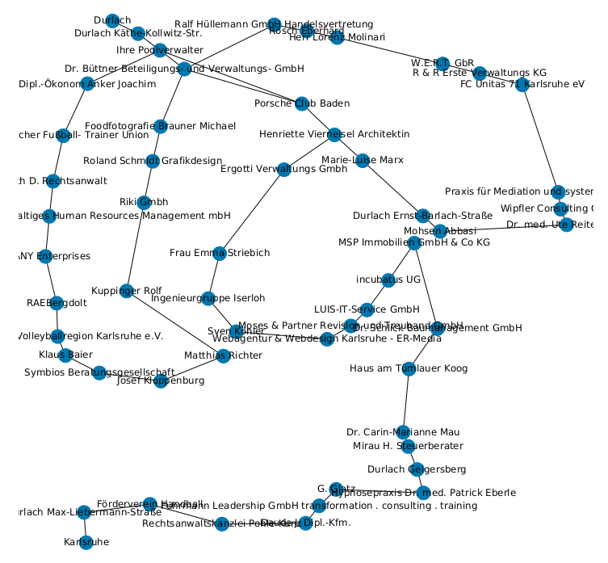

<!DOCTYPE html>
<html lang="en">
<head>
<meta charset="UTF-8">
<meta http-equiv="X-UA-Compatible" content="IE=edge">
<meta name="viewport" content="width=device-width, initial-scale=1.0">
<meta name="generator" content="Asciidoctor 2.0.16">
<title>reading</title>
<link rel="stylesheet" href="https://fonts.googleapis.com/css?family=Open+Sans:300,300italic,400,400italic,600,600italic%7CNoto+Serif:400,400italic,700,700italic%7CDroid+Sans+Mono:400,700">
<style>
/*! Asciidoctor default stylesheet | MIT License | https://asciidoctor.org */
/* Uncomment the following line when using as a custom stylesheet */
/* @import "https://fonts.googleapis.com/css?family=Open+Sans:300,300italic,400,400italic,600,600italic%7CNoto+Serif:400,400italic,700,700italic%7CDroid+Sans+Mono:400,700"; */
html{font-family:sans-serif;-webkit-text-size-adjust:100%}
a{background:none}
a:focus{outline:thin dotted}
a:active,a:hover{outline:0}
h1{font-size:2em;margin:.67em 0}
b,strong{font-weight:bold}
abbr{font-size:.9em}
abbr[title]{cursor:help;border-bottom:1px dotted #dddddf;text-decoration:none}
dfn{font-style:italic}
hr{height:0}
mark{background:#ff0;color:#000}
code,kbd,pre,samp{font-family:monospace;font-size:1em}
pre{white-space:pre-wrap}
q{quotes:"\201C" "\201D" "\2018" "\2019"}
small{font-size:80%}
sub,sup{font-size:75%;line-height:0;position:relative;vertical-align:baseline}
sup{top:-.5em}
sub{bottom:-.25em}
img{border:0}
svg:not(:root){overflow:hidden}
figure{margin:0}
audio,video{display:inline-block}
audio:not([controls]){display:none;height:0}
fieldset{border:1px solid silver;margin:0 2px;padding:.35em .625em .75em}
legend{border:0;padding:0}
button,input,select,textarea{font-family:inherit;font-size:100%;margin:0}
button,input{line-height:normal}
button,select{text-transform:none}
button,html input[type=button],input[type=reset],input[type=submit]{-webkit-appearance:button;cursor:pointer}
button[disabled],html input[disabled]{cursor:default}
input[type=checkbox],input[type=radio]{padding:0}
button::-moz-focus-inner,input::-moz-focus-inner{border:0;padding:0}
textarea{overflow:auto;vertical-align:top}
table{border-collapse:collapse;border-spacing:0}
*,::before,::after{box-sizing:border-box}
html,body{font-size:100%}
body{background:#fff;color:rgba(0,0,0,.8);padding:0;margin:0;font-family:"Noto Serif","DejaVu Serif",serif;line-height:1;position:relative;cursor:auto;-moz-tab-size:4;-o-tab-size:4;tab-size:4;word-wrap:anywhere;-moz-osx-font-smoothing:grayscale;-webkit-font-smoothing:antialiased}
a:hover{cursor:pointer}
img,object,embed{max-width:100%;height:auto}
object,embed{height:100%}
img{-ms-interpolation-mode:bicubic}
.left{float:left!important}
.right{float:right!important}
.text-left{text-align:left!important}
.text-right{text-align:right!important}
.text-center{text-align:center!important}
.text-justify{text-align:justify!important}
.hide{display:none}
img,object,svg{display:inline-block;vertical-align:middle}
textarea{height:auto;min-height:50px}
select{width:100%}
.subheader,.admonitionblock td.content>.title,.audioblock>.title,.exampleblock>.title,.imageblock>.title,.listingblock>.title,.literalblock>.title,.stemblock>.title,.openblock>.title,.paragraph>.title,.quoteblock>.title,table.tableblock>.title,.verseblock>.title,.videoblock>.title,.dlist>.title,.olist>.title,.ulist>.title,.qlist>.title,.hdlist>.title{line-height:1.45;color:#7a2518;font-weight:400;margin-top:0;margin-bottom:.25em}
div,dl,dt,dd,ul,ol,li,h1,h2,h3,#toctitle,.sidebarblock>.content>.title,h4,h5,h6,pre,form,p,blockquote,th,td{margin:0;padding:0}
a{color:#2156a5;text-decoration:underline;line-height:inherit}
a:hover,a:focus{color:#1d4b8f}
a img{border:0}
p{line-height:1.6;margin-bottom:1.25em;text-rendering:optimizeLegibility}
p aside{font-size:.875em;line-height:1.35;font-style:italic}
h1,h2,h3,#toctitle,.sidebarblock>.content>.title,h4,h5,h6{font-family:"Open Sans","DejaVu Sans",sans-serif;font-weight:300;font-style:normal;color:#ba3925;text-rendering:optimizeLegibility;margin-top:1em;margin-bottom:.5em;line-height:1.0125em}
h1 small,h2 small,h3 small,#toctitle small,.sidebarblock>.content>.title small,h4 small,h5 small,h6 small{font-size:60%;color:#e99b8f;line-height:0}
h1{font-size:2.125em}
h2{font-size:1.6875em}
h3,#toctitle,.sidebarblock>.content>.title{font-size:1.375em}
h4,h5{font-size:1.125em}
h6{font-size:1em}
hr{border:solid #dddddf;border-width:1px 0 0;clear:both;margin:1.25em 0 1.1875em}
em,i{font-style:italic;line-height:inherit}
strong,b{font-weight:bold;line-height:inherit}
small{font-size:60%;line-height:inherit}
code{font-family:"Droid Sans Mono","DejaVu Sans Mono",monospace;font-weight:400;color:rgba(0,0,0,.9)}
ul,ol,dl{line-height:1.6;margin-bottom:1.25em;list-style-position:outside;font-family:inherit}
ul,ol{margin-left:1.5em}
ul li ul,ul li ol{margin-left:1.25em;margin-bottom:0}
ul.square li ul,ul.circle li ul,ul.disc li ul{list-style:inherit}
ul.square{list-style-type:square}
ul.circle{list-style-type:circle}
ul.disc{list-style-type:disc}
ol li ul,ol li ol{margin-left:1.25em;margin-bottom:0}
dl dt{margin-bottom:.3125em;font-weight:bold}
dl dd{margin-bottom:1.25em}
blockquote{margin:0 0 1.25em;padding:.5625em 1.25em 0 1.1875em;border-left:1px solid #ddd}
blockquote,blockquote p{line-height:1.6;color:rgba(0,0,0,.85)}
@media screen and (min-width:768px){h1,h2,h3,#toctitle,.sidebarblock>.content>.title,h4,h5,h6{line-height:1.2}
h1{font-size:2.75em}
h2{font-size:2.3125em}
h3,#toctitle,.sidebarblock>.content>.title{font-size:1.6875em}
h4{font-size:1.4375em}}
table{background:#fff;margin-bottom:1.25em;border:1px solid #dedede;word-wrap:normal}
table thead,table tfoot{background:#f7f8f7}
table thead tr th,table thead tr td,table tfoot tr th,table tfoot tr td{padding:.5em .625em .625em;font-size:inherit;color:rgba(0,0,0,.8);text-align:left}
table tr th,table tr td{padding:.5625em .625em;font-size:inherit;color:rgba(0,0,0,.8)}
table tr.even,table tr.alt{background:#f8f8f7}
table thead tr th,table tfoot tr th,table tbody tr td,table tr td,table tfoot tr td{line-height:1.6}
h1,h2,h3,#toctitle,.sidebarblock>.content>.title,h4,h5,h6{line-height:1.2;word-spacing:-.05em}
h1 strong,h2 strong,h3 strong,#toctitle strong,.sidebarblock>.content>.title strong,h4 strong,h5 strong,h6 strong{font-weight:400}
.center{margin-left:auto;margin-right:auto}
.stretch{width:100%}
.clearfix::before,.clearfix::after,.float-group::before,.float-group::after{content:" ";display:table}
.clearfix::after,.float-group::after{clear:both}
:not(pre).nobreak{word-wrap:normal}
:not(pre).nowrap{white-space:nowrap}
:not(pre).pre-wrap{white-space:pre-wrap}
:not(pre):not([class^=L])>code{font-size:.9375em;font-style:normal!important;letter-spacing:0;padding:.1em .5ex;word-spacing:-.15em;background:#f7f7f8;border-radius:4px;line-height:1.45;text-rendering:optimizeSpeed}
pre{color:rgba(0,0,0,.9);font-family:"Droid Sans Mono","DejaVu Sans Mono",monospace;line-height:1.45;text-rendering:optimizeSpeed}
pre code,pre pre{color:inherit;font-size:inherit;line-height:inherit}
pre>code{display:block}
pre.nowrap,pre.nowrap pre{white-space:pre;word-wrap:normal}
em em{font-style:normal}
strong strong{font-weight:400}
.keyseq{color:rgba(51,51,51,.8)}
kbd{font-family:"Droid Sans Mono","DejaVu Sans Mono",monospace;display:inline-block;color:rgba(0,0,0,.8);font-size:.65em;line-height:1.45;background:#f7f7f7;border:1px solid #ccc;border-radius:3px;box-shadow:0 1px 0 rgba(0,0,0,.2),inset 0 0 0 .1em #fff;margin:0 .15em;padding:.2em .5em;vertical-align:middle;position:relative;top:-.1em;white-space:nowrap}
.keyseq kbd:first-child{margin-left:0}
.keyseq kbd:last-child{margin-right:0}
.menuseq,.menuref{color:#000}
.menuseq b:not(.caret),.menuref{font-weight:inherit}
.menuseq{word-spacing:-.02em}
.menuseq b.caret{font-size:1.25em;line-height:.8}
.menuseq i.caret{font-weight:bold;text-align:center;width:.45em}
b.button::before,b.button::after{position:relative;top:-1px;font-weight:400}
b.button::before{content:"[";padding:0 3px 0 2px}
b.button::after{content:"]";padding:0 2px 0 3px}
p a>code:hover{color:rgba(0,0,0,.9)}
#header,#content,#footnotes,#footer{width:100%;margin:0 auto;max-width:62.5em;*zoom:1;position:relative;padding-left:.9375em;padding-right:.9375em}
#header::before,#header::after,#content::before,#content::after,#footnotes::before,#footnotes::after,#footer::before,#footer::after{content:" ";display:table}
#header::after,#content::after,#footnotes::after,#footer::after{clear:both}
#content{margin-top:1.25em}
#content::before{content:none}
#header>h1:first-child{color:rgba(0,0,0,.85);margin-top:2.25rem;margin-bottom:0}
#header>h1:first-child+#toc{margin-top:8px;border-top:1px solid #dddddf}
#header>h1:only-child,body.toc2 #header>h1:nth-last-child(2){border-bottom:1px solid #dddddf;padding-bottom:8px}
#header .details{border-bottom:1px solid #dddddf;line-height:1.45;padding-top:.25em;padding-bottom:.25em;padding-left:.25em;color:rgba(0,0,0,.6);display:flex;flex-flow:row wrap}
#header .details span:first-child{margin-left:-.125em}
#header .details span.email a{color:rgba(0,0,0,.85)}
#header .details br{display:none}
#header .details br+span::before{content:"\00a0\2013\00a0"}
#header .details br+span.author::before{content:"\00a0\22c5\00a0";color:rgba(0,0,0,.85)}
#header .details br+span#revremark::before{content:"\00a0|\00a0"}
#header #revnumber{text-transform:capitalize}
#header #revnumber::after{content:"\00a0"}
#content>h1:first-child:not([class]){color:rgba(0,0,0,.85);border-bottom:1px solid #dddddf;padding-bottom:8px;margin-top:0;padding-top:1rem;margin-bottom:1.25rem}
#toc{border-bottom:1px solid #e7e7e9;padding-bottom:.5em}
#toc>ul{margin-left:.125em}
#toc ul.sectlevel0>li>a{font-style:italic}
#toc ul.sectlevel0 ul.sectlevel1{margin:.5em 0}
#toc ul{font-family:"Open Sans","DejaVu Sans",sans-serif;list-style-type:none}
#toc li{line-height:1.3334;margin-top:.3334em}
#toc a{text-decoration:none}
#toc a:active{text-decoration:underline}
#toctitle{color:#7a2518;font-size:1.2em}
@media screen and (min-width:768px){#toctitle{font-size:1.375em}
body.toc2{padding-left:15em;padding-right:0}
#toc.toc2{margin-top:0!important;background:#f8f8f7;position:fixed;width:15em;left:0;top:0;border-right:1px solid #e7e7e9;border-top-width:0!important;border-bottom-width:0!important;z-index:1000;padding:1.25em 1em;height:100%;overflow:auto}
#toc.toc2 #toctitle{margin-top:0;margin-bottom:.8rem;font-size:1.2em}
#toc.toc2>ul{font-size:.9em;margin-bottom:0}
#toc.toc2 ul ul{margin-left:0;padding-left:1em}
#toc.toc2 ul.sectlevel0 ul.sectlevel1{padding-left:0;margin-top:.5em;margin-bottom:.5em}
body.toc2.toc-right{padding-left:0;padding-right:15em}
body.toc2.toc-right #toc.toc2{border-right-width:0;border-left:1px solid #e7e7e9;left:auto;right:0}}
@media screen and (min-width:1280px){body.toc2{padding-left:20em;padding-right:0}
#toc.toc2{width:20em}
#toc.toc2 #toctitle{font-size:1.375em}
#toc.toc2>ul{font-size:.95em}
#toc.toc2 ul ul{padding-left:1.25em}
body.toc2.toc-right{padding-left:0;padding-right:20em}}
#content #toc{border:1px solid #e0e0dc;margin-bottom:1.25em;padding:1.25em;background:#f8f8f7;border-radius:4px}
#content #toc>:first-child{margin-top:0}
#content #toc>:last-child{margin-bottom:0}
#footer{max-width:none;background:rgba(0,0,0,.8);padding:1.25em}
#footer-text{color:hsla(0,0%,100%,.8);line-height:1.44}
#content{margin-bottom:.625em}
.sect1{padding-bottom:.625em}
@media screen and (min-width:768px){#content{margin-bottom:1.25em}
.sect1{padding-bottom:1.25em}}
.sect1:last-child{padding-bottom:0}
.sect1+.sect1{border-top:1px solid #e7e7e9}
#content h1>a.anchor,h2>a.anchor,h3>a.anchor,#toctitle>a.anchor,.sidebarblock>.content>.title>a.anchor,h4>a.anchor,h5>a.anchor,h6>a.anchor{position:absolute;z-index:1001;width:1.5ex;margin-left:-1.5ex;display:block;text-decoration:none!important;visibility:hidden;text-align:center;font-weight:400}
#content h1>a.anchor::before,h2>a.anchor::before,h3>a.anchor::before,#toctitle>a.anchor::before,.sidebarblock>.content>.title>a.anchor::before,h4>a.anchor::before,h5>a.anchor::before,h6>a.anchor::before{content:"\00A7";font-size:.85em;display:block;padding-top:.1em}
#content h1:hover>a.anchor,#content h1>a.anchor:hover,h2:hover>a.anchor,h2>a.anchor:hover,h3:hover>a.anchor,#toctitle:hover>a.anchor,.sidebarblock>.content>.title:hover>a.anchor,h3>a.anchor:hover,#toctitle>a.anchor:hover,.sidebarblock>.content>.title>a.anchor:hover,h4:hover>a.anchor,h4>a.anchor:hover,h5:hover>a.anchor,h5>a.anchor:hover,h6:hover>a.anchor,h6>a.anchor:hover{visibility:visible}
#content h1>a.link,h2>a.link,h3>a.link,#toctitle>a.link,.sidebarblock>.content>.title>a.link,h4>a.link,h5>a.link,h6>a.link{color:#ba3925;text-decoration:none}
#content h1>a.link:hover,h2>a.link:hover,h3>a.link:hover,#toctitle>a.link:hover,.sidebarblock>.content>.title>a.link:hover,h4>a.link:hover,h5>a.link:hover,h6>a.link:hover{color:#a53221}
details,.audioblock,.imageblock,.literalblock,.listingblock,.stemblock,.videoblock{margin-bottom:1.25em}
details{margin-left:1.25rem}
details>summary{cursor:pointer;display:block;position:relative;line-height:1.6;margin-bottom:.625rem;-webkit-tap-highlight-color:transparent}
details>summary::before{content:"";border:solid transparent;border-left:solid;border-width:.3em 0 .3em .5em;position:absolute;top:.5em;left:-1.25rem;transform:translateX(15%)}
details[open]>summary::before{border:solid transparent;border-top:solid;border-width:.5em .3em 0;transform:translateY(15%)}
details>summary::after{content:"";width:1.25rem;height:1em;position:absolute;top:.3em;left:-1.25rem}
.admonitionblock td.content>.title,.audioblock>.title,.exampleblock>.title,.imageblock>.title,.listingblock>.title,.literalblock>.title,.stemblock>.title,.openblock>.title,.paragraph>.title,.quoteblock>.title,table.tableblock>.title,.verseblock>.title,.videoblock>.title,.dlist>.title,.olist>.title,.ulist>.title,.qlist>.title,.hdlist>.title{text-rendering:optimizeLegibility;text-align:left;font-family:"Noto Serif","DejaVu Serif",serif;font-size:1rem;font-style:italic}
table.tableblock.fit-content>caption.title{white-space:nowrap;width:0}
.paragraph.lead>p,#preamble>.sectionbody>[class=paragraph]:first-of-type p{font-size:1.21875em;line-height:1.6;color:rgba(0,0,0,.85)}
.admonitionblock>table{border-collapse:separate;border:0;background:none;width:100%}
.admonitionblock>table td.icon{text-align:center;width:80px}
.admonitionblock>table td.icon img{max-width:none}
.admonitionblock>table td.icon .title{font-weight:bold;font-family:"Open Sans","DejaVu Sans",sans-serif;text-transform:uppercase}
.admonitionblock>table td.content{padding-left:1.125em;padding-right:1.25em;border-left:1px solid #dddddf;color:rgba(0,0,0,.6);word-wrap:anywhere}
.admonitionblock>table td.content>:last-child>:last-child{margin-bottom:0}
.exampleblock>.content{border:1px solid #e6e6e6;margin-bottom:1.25em;padding:1.25em;background:#fff;border-radius:4px}
.exampleblock>.content>:first-child{margin-top:0}
.exampleblock>.content>:last-child{margin-bottom:0}
.sidebarblock{border:1px solid #dbdbd6;margin-bottom:1.25em;padding:1.25em;background:#f3f3f2;border-radius:4px}
.sidebarblock>:first-child{margin-top:0}
.sidebarblock>:last-child{margin-bottom:0}
.sidebarblock>.content>.title{color:#7a2518;margin-top:0;text-align:center}
.exampleblock>.content>:last-child>:last-child,.exampleblock>.content .olist>ol>li:last-child>:last-child,.exampleblock>.content .ulist>ul>li:last-child>:last-child,.exampleblock>.content .qlist>ol>li:last-child>:last-child,.sidebarblock>.content>:last-child>:last-child,.sidebarblock>.content .olist>ol>li:last-child>:last-child,.sidebarblock>.content .ulist>ul>li:last-child>:last-child,.sidebarblock>.content .qlist>ol>li:last-child>:last-child{margin-bottom:0}
.literalblock pre,.listingblock>.content>pre{border-radius:4px;overflow-x:auto;padding:1em;font-size:.8125em}
@media screen and (min-width:768px){.literalblock pre,.listingblock>.content>pre{font-size:.90625em}}
@media screen and (min-width:1280px){.literalblock pre,.listingblock>.content>pre{font-size:1em}}
.literalblock pre,.listingblock>.content>pre:not(.highlight),.listingblock>.content>pre[class=highlight],.listingblock>.content>pre[class^="highlight "]{background:#f7f7f8}
.literalblock.output pre{color:#f7f7f8;background:rgba(0,0,0,.9)}
.listingblock>.content{position:relative}
.listingblock code[data-lang]::before{display:none;content:attr(data-lang);position:absolute;font-size:.75em;top:.425rem;right:.5rem;line-height:1;text-transform:uppercase;color:inherit;opacity:.5}
.listingblock:hover code[data-lang]::before{display:block}
.listingblock.terminal pre .command::before{content:attr(data-prompt);padding-right:.5em;color:inherit;opacity:.5}
.listingblock.terminal pre .command:not([data-prompt])::before{content:"$"}
.listingblock pre.highlightjs{padding:0}
.listingblock pre.highlightjs>code{padding:1em;border-radius:4px}
.listingblock pre.prettyprint{border-width:0}
.prettyprint{background:#f7f7f8}
pre.prettyprint .linenums{line-height:1.45;margin-left:2em}
pre.prettyprint li{background:none;list-style-type:inherit;padding-left:0}
pre.prettyprint li code[data-lang]::before{opacity:1}
pre.prettyprint li:not(:first-child) code[data-lang]::before{display:none}
table.linenotable{border-collapse:separate;border:0;margin-bottom:0;background:none}
table.linenotable td[class]{color:inherit;vertical-align:top;padding:0;line-height:inherit;white-space:normal}
table.linenotable td.code{padding-left:.75em}
table.linenotable td.linenos{border-right:1px solid;opacity:.35;padding-right:.5em}
pre.pygments .lineno{border-right:1px solid;opacity:.35;display:inline-block;margin-right:.75em}
pre.pygments .lineno::before{content:"";margin-right:-.125em}
.quoteblock{margin:0 1em 1.25em 1.5em;display:table}
.quoteblock:not(.excerpt)>.title{margin-left:-1.5em;margin-bottom:.75em}
.quoteblock blockquote,.quoteblock p{color:rgba(0,0,0,.85);font-size:1.15rem;line-height:1.75;word-spacing:.1em;letter-spacing:0;font-style:italic;text-align:justify}
.quoteblock blockquote{margin:0;padding:0;border:0}
.quoteblock blockquote::before{content:"\201c";float:left;font-size:2.75em;font-weight:bold;line-height:.6em;margin-left:-.6em;color:#7a2518;text-shadow:0 1px 2px rgba(0,0,0,.1)}
.quoteblock blockquote>.paragraph:last-child p{margin-bottom:0}
.quoteblock .attribution{margin-top:.75em;margin-right:.5ex;text-align:right}
.verseblock{margin:0 1em 1.25em}
.verseblock pre{font-family:"Open Sans","DejaVu Sans",sans-serif;font-size:1.15rem;color:rgba(0,0,0,.85);font-weight:300;text-rendering:optimizeLegibility}
.verseblock pre strong{font-weight:400}
.verseblock .attribution{margin-top:1.25rem;margin-left:.5ex}
.quoteblock .attribution,.verseblock .attribution{font-size:.9375em;line-height:1.45;font-style:italic}
.quoteblock .attribution br,.verseblock .attribution br{display:none}
.quoteblock .attribution cite,.verseblock .attribution cite{display:block;letter-spacing:-.025em;color:rgba(0,0,0,.6)}
.quoteblock.abstract blockquote::before,.quoteblock.excerpt blockquote::before,.quoteblock .quoteblock blockquote::before{display:none}
.quoteblock.abstract blockquote,.quoteblock.abstract p,.quoteblock.excerpt blockquote,.quoteblock.excerpt p,.quoteblock .quoteblock blockquote,.quoteblock .quoteblock p{line-height:1.6;word-spacing:0}
.quoteblock.abstract{margin:0 1em 1.25em;display:block}
.quoteblock.abstract>.title{margin:0 0 .375em;font-size:1.15em;text-align:center}
.quoteblock.excerpt>blockquote,.quoteblock .quoteblock{padding:0 0 .25em 1em;border-left:.25em solid #dddddf}
.quoteblock.excerpt,.quoteblock .quoteblock{margin-left:0}
.quoteblock.excerpt blockquote,.quoteblock.excerpt p,.quoteblock .quoteblock blockquote,.quoteblock .quoteblock p{color:inherit;font-size:1.0625rem}
.quoteblock.excerpt .attribution,.quoteblock .quoteblock .attribution{color:inherit;font-size:.85rem;text-align:left;margin-right:0}
p.tableblock:last-child{margin-bottom:0}
td.tableblock>.content{margin-bottom:1.25em;word-wrap:anywhere}
td.tableblock>.content>:last-child{margin-bottom:-1.25em}
table.tableblock,th.tableblock,td.tableblock{border:0 solid #dedede}
table.grid-all>*>tr>*{border-width:1px}
table.grid-cols>*>tr>*{border-width:0 1px}
table.grid-rows>*>tr>*{border-width:1px 0}
table.frame-all{border-width:1px}
table.frame-ends{border-width:1px 0}
table.frame-sides{border-width:0 1px}
table.frame-none>colgroup+*>:first-child>*,table.frame-sides>colgroup+*>:first-child>*{border-top-width:0}
table.frame-none>:last-child>:last-child>*,table.frame-sides>:last-child>:last-child>*{border-bottom-width:0}
table.frame-none>*>tr>:first-child,table.frame-ends>*>tr>:first-child{border-left-width:0}
table.frame-none>*>tr>:last-child,table.frame-ends>*>tr>:last-child{border-right-width:0}
table.stripes-all tr,table.stripes-odd tr:nth-of-type(odd),table.stripes-even tr:nth-of-type(even),table.stripes-hover tr:hover{background:#f8f8f7}
th.halign-left,td.halign-left{text-align:left}
th.halign-right,td.halign-right{text-align:right}
th.halign-center,td.halign-center{text-align:center}
th.valign-top,td.valign-top{vertical-align:top}
th.valign-bottom,td.valign-bottom{vertical-align:bottom}
th.valign-middle,td.valign-middle{vertical-align:middle}
table thead th,table tfoot th{font-weight:bold}
tbody tr th{background:#f7f8f7}
tbody tr th,tbody tr th p,tfoot tr th,tfoot tr th p{color:rgba(0,0,0,.8);font-weight:bold}
p.tableblock>code:only-child{background:none;padding:0}
p.tableblock{font-size:1em}
ol{margin-left:1.75em}
ul li ol{margin-left:1.5em}
dl dd{margin-left:1.125em}
dl dd:last-child,dl dd:last-child>:last-child{margin-bottom:0}
ol>li p,ul>li p,ul dd,ol dd,.olist .olist,.ulist .ulist,.ulist .olist,.olist .ulist{margin-bottom:.625em}
ul.checklist,ul.none,ol.none,ul.no-bullet,ol.no-bullet,ol.unnumbered,ul.unstyled,ol.unstyled{list-style-type:none}
ul.no-bullet,ol.no-bullet,ol.unnumbered{margin-left:.625em}
ul.unstyled,ol.unstyled{margin-left:0}
ul.checklist>li>p:first-child{margin-left:-1em}
ul.checklist>li>p:first-child>.fa-square-o:first-child,ul.checklist>li>p:first-child>.fa-check-square-o:first-child{width:1.25em;font-size:.8em;position:relative;bottom:.125em}
ul.checklist>li>p:first-child>input[type=checkbox]:first-child{margin-right:.25em}
ul.inline{display:flex;flex-flow:row wrap;list-style:none;margin:0 0 .625em -1.25em}
ul.inline>li{margin-left:1.25em}
.unstyled dl dt{font-weight:400;font-style:normal}
ol.arabic{list-style-type:decimal}
ol.decimal{list-style-type:decimal-leading-zero}
ol.loweralpha{list-style-type:lower-alpha}
ol.upperalpha{list-style-type:upper-alpha}
ol.lowerroman{list-style-type:lower-roman}
ol.upperroman{list-style-type:upper-roman}
ol.lowergreek{list-style-type:lower-greek}
.hdlist>table,.colist>table{border:0;background:none}
.hdlist>table>tbody>tr,.colist>table>tbody>tr{background:none}
td.hdlist1,td.hdlist2{vertical-align:top;padding:0 .625em}
td.hdlist1{font-weight:bold;padding-bottom:1.25em}
td.hdlist2{word-wrap:anywhere}
.literalblock+.colist,.listingblock+.colist{margin-top:-.5em}
.colist td:not([class]):first-child{padding:.4em .75em 0;line-height:1;vertical-align:top}
.colist td:not([class]):first-child img{max-width:none}
.colist td:not([class]):last-child{padding:.25em 0}
.thumb,.th{line-height:0;display:inline-block;border:4px solid #fff;box-shadow:0 0 0 1px #ddd}
.imageblock.left{margin:.25em .625em 1.25em 0}
.imageblock.right{margin:.25em 0 1.25em .625em}
.imageblock>.title{margin-bottom:0}
.imageblock.thumb,.imageblock.th{border-width:6px}
.imageblock.thumb>.title,.imageblock.th>.title{padding:0 .125em}
.image.left,.image.right{margin-top:.25em;margin-bottom:.25em;display:inline-block;line-height:0}
.image.left{margin-right:.625em}
.image.right{margin-left:.625em}
a.image{text-decoration:none;display:inline-block}
a.image object{pointer-events:none}
sup.footnote,sup.footnoteref{font-size:.875em;position:static;vertical-align:super}
sup.footnote a,sup.footnoteref a{text-decoration:none}
sup.footnote a:active,sup.footnoteref a:active{text-decoration:underline}
#footnotes{padding-top:.75em;padding-bottom:.75em;margin-bottom:.625em}
#footnotes hr{width:20%;min-width:6.25em;margin:-.25em 0 .75em;border-width:1px 0 0}
#footnotes .footnote{padding:0 .375em 0 .225em;line-height:1.3334;font-size:.875em;margin-left:1.2em;margin-bottom:.2em}
#footnotes .footnote a:first-of-type{font-weight:bold;text-decoration:none;margin-left:-1.05em}
#footnotes .footnote:last-of-type{margin-bottom:0}
#content #footnotes{margin-top:-.625em;margin-bottom:0;padding:.75em 0}
.gist .file-data>table{border:0;background:#fff;width:100%;margin-bottom:0}
.gist .file-data>table td.line-data{width:99%}
div.unbreakable{page-break-inside:avoid}
.big{font-size:larger}
.small{font-size:smaller}
.underline{text-decoration:underline}
.overline{text-decoration:overline}
.line-through{text-decoration:line-through}
.aqua{color:#00bfbf}
.aqua-background{background:#00fafa}
.black{color:#000}
.black-background{background:#000}
.blue{color:#0000bf}
.blue-background{background:#0000fa}
.fuchsia{color:#bf00bf}
.fuchsia-background{background:#fa00fa}
.gray{color:#606060}
.gray-background{background:#7d7d7d}
.green{color:#006000}
.green-background{background:#007d00}
.lime{color:#00bf00}
.lime-background{background:#00fa00}
.maroon{color:#600000}
.maroon-background{background:#7d0000}
.navy{color:#000060}
.navy-background{background:#00007d}
.olive{color:#606000}
.olive-background{background:#7d7d00}
.purple{color:#600060}
.purple-background{background:#7d007d}
.red{color:#bf0000}
.red-background{background:#fa0000}
.silver{color:#909090}
.silver-background{background:#bcbcbc}
.teal{color:#006060}
.teal-background{background:#007d7d}
.white{color:#bfbfbf}
.white-background{background:#fafafa}
.yellow{color:#bfbf00}
.yellow-background{background:#fafa00}
span.icon>.fa{cursor:default}
a span.icon>.fa{cursor:inherit}
.admonitionblock td.icon [class^="fa icon-"]{font-size:2.5em;text-shadow:1px 1px 2px rgba(0,0,0,.5);cursor:default}
.admonitionblock td.icon .icon-note::before{content:"\f05a";color:#19407c}
.admonitionblock td.icon .icon-tip::before{content:"\f0eb";text-shadow:1px 1px 2px rgba(155,155,0,.8);color:#111}
.admonitionblock td.icon .icon-warning::before{content:"\f071";color:#bf6900}
.admonitionblock td.icon .icon-caution::before{content:"\f06d";color:#bf3400}
.admonitionblock td.icon .icon-important::before{content:"\f06a";color:#bf0000}
.conum[data-value]{display:inline-block;color:#fff!important;background:rgba(0,0,0,.8);border-radius:50%;text-align:center;font-size:.75em;width:1.67em;height:1.67em;line-height:1.67em;font-family:"Open Sans","DejaVu Sans",sans-serif;font-style:normal;font-weight:bold}
.conum[data-value] *{color:#fff!important}
.conum[data-value]+b{display:none}
.conum[data-value]::after{content:attr(data-value)}
pre .conum[data-value]{position:relative;top:-.125em}
b.conum *{color:inherit!important}
.conum:not([data-value]):empty{display:none}
dt,th.tableblock,td.content,div.footnote{text-rendering:optimizeLegibility}
h1,h2,p,td.content,span.alt,summary{letter-spacing:-.01em}
p strong,td.content strong,div.footnote strong{letter-spacing:-.005em}
p,blockquote,dt,td.content,span.alt,summary{font-size:1.0625rem}
p{margin-bottom:1.25rem}
.sidebarblock p,.sidebarblock dt,.sidebarblock td.content,p.tableblock{font-size:1em}
.exampleblock>.content{background:#fffef7;border-color:#e0e0dc;box-shadow:0 1px 4px #e0e0dc}
.print-only{display:none!important}
@page{margin:1.25cm .75cm}
@media print{*{box-shadow:none!important;text-shadow:none!important}
html{font-size:80%}
a{color:inherit!important;text-decoration:underline!important}
a.bare,a[href^="#"],a[href^="mailto:"]{text-decoration:none!important}
a[href^="http:"]:not(.bare)::after,a[href^="https:"]:not(.bare)::after{content:"(" attr(href) ")";display:inline-block;font-size:.875em;padding-left:.25em}
abbr[title]{border-bottom:1px dotted}
abbr[title]::after{content:" (" attr(title) ")"}
pre,blockquote,tr,img,object,svg{page-break-inside:avoid}
thead{display:table-header-group}
svg{max-width:100%}
p,blockquote,dt,td.content{font-size:1em;orphans:3;widows:3}
h2,h3,#toctitle,.sidebarblock>.content>.title{page-break-after:avoid}
#header,#content,#footnotes,#footer{max-width:none}
#toc,.sidebarblock,.exampleblock>.content{background:none!important}
#toc{border-bottom:1px solid #dddddf!important;padding-bottom:0!important}
body.book #header{text-align:center}
body.book #header>h1:first-child{border:0!important;margin:2.5em 0 1em}
body.book #header .details{border:0!important;display:block;padding:0!important}
body.book #header .details span:first-child{margin-left:0!important}
body.book #header .details br{display:block}
body.book #header .details br+span::before{content:none!important}
body.book #toc{border:0!important;text-align:left!important;padding:0!important;margin:0!important}
body.book #toc,body.book #preamble,body.book h1.sect0,body.book .sect1>h2{page-break-before:always}
.listingblock code[data-lang]::before{display:block}
#footer{padding:0 .9375em}
.hide-on-print{display:none!important}
.print-only{display:block!important}
.hide-for-print{display:none!important}
.show-for-print{display:inherit!important}}
@media amzn-kf8,print{#header>h1:first-child{margin-top:1.25rem}
.sect1{padding:0!important}
.sect1+.sect1{border:0}
#footer{background:none}
#footer-text{color:rgba(0,0,0,.6);font-size:.9em}}
@media amzn-kf8{#header,#content,#footnotes,#footer{padding:0}}
</style>
</head>
<body class="article data-line-1">
<div id="header">
</div>
<div id="content">
<div class="paragraph data-line-4">
<p>нейросети модели распространения сигнала</p>
</div>
<div class="paragraph data-line-7">
<p>нейросети для работы с разнородным набором навигационных данных</p>
</div>
<div class="paragraph data-line-10">
<p>global bayes optimization</p>
</div>
<div class="paragraph data-line-12">
<p>encoder decoder</p>
</div>
<div class="olist arabic data-line-16">
<ol class="arabic">
<li class="data-line-16">
<p>Описание алгоритмов ORB SLAM,
описание методов ИИ, используемых в SLAM.
50 стр.</p>
</li>
</ol>
</div>
<div class="paragraph data-line-20">
<p>chimera, semantic segmentation</p>
</div>
<div class="paragraph data-line-22">
<p>navigation approaches,</p>
</div>
<div class="paragraph data-line-24">
<p>navigation for drone, car, robot, pedestrian
sensor fusion, radiomap &amp; map data, representation, data collection, full pipeline</p>
</div>
<div class="paragraph data-line-27">
<p>neural networks for navigation</p>
</div>
<div class="paragraph data-line-30">
<p>encoding radiomap using deep nn</p>
</div>
<div class="paragraph data-line-32">
<p>adaptive sensor fusion using nn
adaptive calman filter using nn
adaptive slam using nn</p>
</div>
<div class="paragraph data-line-36">
<p>using semantic segmentation
for tracking, mapping, other aproaches
for better accuracy
for robustness
for easy data collection, data fusion</p>
</div>
<div class="paragraph data-line-43">
<p>use of all sources of information together, how to fuse data from different devices,
dence map, architecture, create sparse map from dense map &amp; obserations</p>
</div>
<div class="paragraph data-line-46">
<p>multimodal map for multiple agents navigation</p>
</div>
<div class="sect1 data-line-49">
<h2 id="_reading">reading</h2>
<div class="sectionbody">
<div class="paragraph data-line-51">
<p>Probabilistic Data Association for Semantic SLAM</p>
</div>
<div class="paragraph data-line-79">
<div class="title">Example keyframe image overlaid with ORB features (green points) and object detections</div>
<p><span class="image"></span></p>
</div>
<div class="paragraph data-line-82">
<div class="title">Estimated sensor trajectory (blue) and landmark positions and classes using inertial, geometric, and semantic measurements such as those in Fig. 1. The accompanying video shows the estimation process in real time.</div>
<p><span class="image"></span></p>
</div>
<div class="paragraph data-line-85">
<p>Semantic information
The last type of measurement used are object detections
S t extracted from every keyframe image. An object detection
s k = (s ck , s sk , s bk ) ∈ S t extracted from keyframe t consists of
a detected class s ck ∈ C, a score s sk quantifying the detection
confidence, and a bounding box s bk . Such information can be
obtained from any modern approach for object recognition
such as [5], [34]–[36]. In our implementation, we use a
deformable parts model (DPM) detector [4], [37], [38],
which runs on a CPU in real time</p>
</div>
<div class="paragraph data-line-96">
<p>Problem (Semantic SLAM). Given inertial I , {I t } Tt=1 ,
geometric Y , {Y t } Tt=1 , and semantic S , {S t } Tt=1
measurements, estimate the sensor state trajectory X and the
positions and classes L of the objects in the environment.</p>
</div>
<div class="paragraph data-line-101">
<p>The inertial and geometric measurements are used to
track the sensor trajectory locally and, similar to a visual
odometry approach, the geometric structure is not recovered.
The semantic measurements, in contrast, are used to construct
a map of objects that can be used to perform loop closure that
is robust to ambiguities and viewpoint and is more efficient
than a SLAM approach that maintains full geometric structure.</p>
</div>
<div class="paragraph data-line-110">
<p>использование реальных объектов в качестве точек
привязки на карте незначительно улучшило точность позиционирования для монокулярного SLAM,
при этом само наличие семантических объектов в карте или семантической карты может оказать совершенно другой эффект.</p>
</div>
<div class="paragraph data-line-114">
<p>Зная семантику карты, можно предлагать пользователю более точный и понятный маршрут. Объекты карты (дверь, окно, &#8230;&#8203;) могут быть поняты и восприняты человеком.</p>
</div>
<div class="paragraph data-line-116">
<p>В отличии от методов SLAM без извлечения семантики карты, где характерная точка на изображении это яркая точка на стене в которой определенным образом изменяется градиент яркости, что невозможно использовать для объяснения маршрута пользователю.</p>
</div>
<div class="paragraph data-line-118">
<p>Использование семантики для построения маршрута это отдельная глобальная задача. Когда навигатор диктует пользователю инструкции движения по маршруту, определенная семантика карты при этом используется.</p>
</div>
<div class="paragraph data-line-120">
<p>Значительное количество исследований посвящены использованию более деальной семантики карты для навигации в городских условиях и внутри помещений.</p>
</div>
<div class="paragraph data-line-123">
<p>from: Visual Semantic SLAM with Landmarks for Large-Scale Outdoor
Environment</p>
</div>
<div class="paragraph data-line-127">
<p>In this paper, a Monocular camera-based semantic SLAM
system with landmarks is developed for large-scale outdoor
localization and navigation. Existing works have focused only
on accuracy or real-time performance, which might be difficult
for real improvement of overall cognitive level of robots.</p>
</div>
<div class="imageblock data-line-134">
<div class="content">

</div>
<div class="title">Figure 1. The flowchart of whole system.</div>
</div>
<div class="imageblock data-line-137">
<div class="content">

</div>
<div class="title">Figure 2. семантический граф, объекты на графе включают в себя: автомобили, организации, людей</div>
</div>
<div class="paragraph data-line-139">
<p>Topological semantic mapping: The semantic SLAM
can also generate a topological semantic map which only
contains reachable relationships between landmarks and their
geometrical relationships. There will be only edges and nodes
in the semantic map and be more suitable for global path
planning.
The topological map is built through the following steps.
First, after the mapping process in SLAM system, the trajec-
tory of camera will be saved. The landmark will be associated
with its closest key frame. Second, there will be two kinds of
key frame that are saved, i.e. the key frames associated with
landmarks and the key frames in where to turn. Third, the
map will be optimized if the place is visited for more than
one times. The previous nodes will be fused with the new
node if they represent the same location or landmark. The
Topological semantic map is shown in the figure 3.</p>
</div>
<div class="paragraph data-line-158">
<p>It will be useful for large-scale landmark-based
navigation tasks or human-robot interaction.
Experiment shows that semantic information will allow
the robots to know more about the environments not only
the meaningless features but also their semantic meanings.
Besides, based on semantic meaning, the robots will re-
localize themselves with more robust features such as features
on buildings, roads, sidewalks, walls, rather than vehicles,
trees, person, etc.</p>
</div>
<div class="paragraph data-line-168">
<p>The experiments were designed by using ROS and Keras,
our computing platform involves Intel Core i7 CPU and
NVIDIA GeForce GTX 1080Ti GPU platform.
We have tested the system run time when they work
together. The overall system can run in nearly 1.8Hz in our
computing system. Since the semantic segmentation model we
use is based on PSPNet-101 which is a large CNN model
without acceleration</p>
</div>
<div class="imageblock data-line-177">
<div class="content">

</div>
</div>
<div class="paragraph data-line-192">
<p>DOT: Dynamic Object Tracking for Visual SLAM</p>
</div>
<div class="paragraph data-line-195">
<p>для навигации в динамическом окружении необходимо по разному учитывать подвижные и неподвижные объекты. .</p>
</div>
<div class="paragraph data-line-198">
<p>Simultaneous Localisation and Mapping, commonly known by its acronym SLAM, is one of the fun-
damental capabilities for the autonomous navigation of robotic platforms [3]. Its goal is the joint
estimation of the robot motion and a map of its surroundings, from the information of its embedded
sensors. Visual SLAM, for which the sensors are mainly, or exclusively, cameras, is one of the most
challenging yet relevant configurations.
Despite the significant advances in SLAM in recent years, most systems still assume a static envi-
ronment, where the relative position between the 3D points in the scene remains unchanged, the only
movement being that of the camera. Following this fundamental assumption, camera-pose estimation
algorithms attribute the changes between two images exclusively to the relative transformation due
to camera displacements. Therefore, they can not account for the effects of moving objects. At best,
some algorithms can detect and treat them as outliers [15, 16] to be ignored during the pose tracking
and map estimation process. However, this does not prevent that, during the time interval elapsed
until their detection as moving objects, the associated information is integrated into the estimation
assuming scene rigidity, introducing errors and inconsistencies in the pose and map estimations. More-
over, for those visual SLAM approaches that base the pose tracking on the matching of a small number
of key-points, the errors generated by dynamic elements can be fatal and even lead to system failure.
The world of real applications in which a robot must operate is, in general, far from being com-
pletely static: autonomous navigation of vehicles such as cars or drones, augmented reality applications
or terrestrial and even planetary exploration tasks (where the lack of identifiable characteristics in
the images makes SLAM systems precarious in the presence of shadows or other robots). It is there-
fore necessary to develop visual SLAM systems with the necessary robustness to operate in highly
dynamic environments. This was the motivation for this work, which is aimed at developing an image
processing strategy that improves the robustness of a visual SLAM system in environments containing
moving objects. As a result, we developed “Dynamic Object Tracking” (DOT), a front-end system
that combines semantic instances with multi-view geometry to estimate the movement of the camera
as well as that of scene objects using direct methods [4]. The result of the pre-processing is a mask
encoding both static and dynamic parts of each image fed into the SLAM system, so as to not use
the correspondences found in the dynamic regions. The study includes an experimental validation
specifically designed to evaluate the system’s ability to effectively reduce the errors associated with
SLAM mapping and motion estimation.
The main contributions of our proposed system can be summarised as:
• Significant improvement in the robustness and accuracy of the coupled SLAM system in highly
dynamic environments.
• Independence with respect to the particular SLAM system, which makes it a versatile front-end
that can be adapted with minimal integration work to any state-of-art visual odometry or SLAM
system.
• Unlike other systems, it can be implemented to operate in real time, since DOT allows semantic
segmentation to be performed at a lower frequency than that of the camera
• Robustness against neural net segmentation errors.</p>
</div>
<div class="olist arabic data-line-239">
<ol class="arabic">
<li class="data-line-239">
<p>не учитывать информацию о том что объекты могут двигаться</p>
</li>
</ol>
</div>
<div class="paragraph data-line-241">
<p>The first of the categories, and the most general one, models the scene as a set of non-rigid parts,
hence including deformable and dynamic objects [17, 11, 12]. While this research line is relevant
because of its generality and potential applications, it also poses significant challenges mainly related
to deformation models. In this work, we consider that the world is composed of a variable number of
rigid solids, which is the premise behind the other two categories of dynamic visual SLAM.</p>
</div>
<div class="olist arabic data-line-247">
<ol class="arabic">
<li class="data-line-247">
<p>игнорировать объекты которые потенциально могут двигаться:</p>
</li>
</ol>
</div>
<div class="paragraph data-line-249">
<p>Along this line of work, DynaSLAM [1], built on
top of ORB-SLAM2 [16], aims to estimate static maps that can be reused in long-term applications.
Dynamic objects are removed by combining 1) semantic segmentation for potentially moving objects,
and 2) multi-view geometry for detecting inconsistencies in the rigid model. Mask R-CNN [8] is
used for semantic segmentation, which detects and classifies the objects in the scene into different
categories, some of which have been pre-set as potentially dynamic (e.g., car or person). DynaSLAM
was designed to mask out all the potentially mobile objects in the scene. This results in a lower
accuracy than the original ORB-SLAM2 in scenes containing potentially mobile objects that are not
actually moving (e.g., with many cars parked) since removing image tracks located on the potentially
moving, but actually static, objects impacts negatively on the camera path estimation process. The
aim of this work is, precisely, to overcome this problem as only those objects that are moving at that
precise moment will be labelled as dynamic.</p>
</div>
<div class="olist arabic data-line-263">
<ol class="arabic">
<li class="data-line-263">
<p>динамическая карта, учитывать что некоторые объекты на карте потенциально могут двигаться</p>
</li>
</ol>
</div>
<div class="paragraph data-line-265">
<p>line of work in dynamic visual SLAM, which goes beyond the segmentation and
suppression of dynamic objects, includes works such as MID-Fusion [20] and MaskFusion [18]. Their
aim is to reconstruct the background of the scene and also to estimate the movement of the different
dynamic objects. For that purpose, sub-maps of each possible moving object are created and a joint
estimation of both the objects and camera poses is carried out.</p>
</div>
<div class="imageblock data-line-272">
<div class="content">

</div>
</div>
<div class="paragraph data-line-274">
<p>The first block (Instance Segmentation) corresponds to the CNN that segments out pixelwise all
the dynamic objects (in our experimental part, only vehicles are considered). As explained below, the
frequency at which the network operates does not need to be that of the video, but can be lower.
The image processing block (Image processing) extracts and separates the points belonging to
static regions of the image and the points that are in dynamic objects. Camera tracking is estimated
by using only the static part of the scene. From this block, and taking into account the camera pose,
the movement of each of the objects segmented by the network is calculated independently (Object
tracking).
The last block (Is the object moving?) determines, from geometric calculations, whether the
objects previously labelled as dynamic by the network are indeed moving. This information is used
to update the masks encoding the static and dynamic regions of each frame and to feed the linked
odometry/SLAM visual system.</p>
</div>
<div class="paragraph data-line-287">
<p>DOT is a novel front-end algorithm for SLAM systems that combines semantic segmentation with
multi-view geometry to estimate camera and object motion using direct methods.
The evaluation of DOT in combination with ORB-SLAM2 in three public datasets for autonomous
driving research [6][5][2] demonstrates that DOT-generated object motion information allows the
SLAM system to adapt to the scene content and to significantly improve its performance, in terms of
both accuracy and robustness.
The independence of DOT from SLAM system makes it a versatile front-end that can be adapted
with minimal integration work to any state-of-art visual odometry or SLAM system. In addition,
DOT allows semantic segmentation (typically involving high computational cost) to be performed at
a lower frequency than the camera, which unlike other systems enables real-time implementation.</p>
</div>
<div class="paragraph data-line-303">
<p>semantic slam, nn slam, nn + orb</p>
</div>
<div class="paragraph data-line-305">
<p>cnn slam</p>
</div>
<div class="paragraph data-line-307">
<p>that simultaneously learns monocular depth, optical flow
and egomotion estimation based on video inputs using an
unsupervised manner. They achieve state of the art re-
sults for each vision task such as odometry using the KITTI
benchmark suite [27]. The approach removes the need of
data annotation for CNN based SLAM. The key idea is to
get use of the strong dependence of each geometric vision
task (depth, pose and optical flow) to design a joint loss
function that is purely based on consistency checks. There-
fore, a rigid decoder for depth and pose such as a non-rigid</p>
</div>
<div class="paragraph data-line-318">
<p>The method outperforms ORB-SLAM on an auto-
motive scenario. The short outline emphasize the possibility
of using deep learning for SLAM.</p>
</div>
<div class="paragraph data-line-323">
<p>CNNs have become the de facto approach for object de-
tection and semantic segmentation in automated driving.
They also show promising progress in geometric computer
vision algorithms like depth and flow estimation. However,
there is slow progress on CNN based Visual SLAM ap-
proaches. In this work, we provided an overview of Visual
SLAM for automated driving and surveyed possible oppor-
tunities for using CNNs in various building blocks.</p>
</div>
<div class="paragraph data-line-332">
<p>использовать нейронные сети для построения карты и улучшения определения характерных точек, карты глубины,  повысить точность самой карты</p>
</div>
<div class="paragraph data-line-334">
<p>не использовать нейронные сети для задачи локализации, по метрикам достаточно текущего решения orb-slam для точной навигациии и локализации</p>
</div>
<div class="paragraph data-line-336">
<p>модифицировать метоод навигации используя нейронные сети для более точно предсказания карты глубины, обработка самой карты на стороне сервера.</p>
</div>
<div class="paragraph data-line-343">
<p><a href="https://interiornet.org/" class="undefined" data-href="https://interiornet.org/">https://interiornet.org/</a>
InteriorNet: Mega-scale Multi-sensor Photo-realistic
Indoor Scenes Dataset</p>
</div>
<div class="paragraph data-line-348">
<div class="title">System Overview: an end-to-end pipeline to render an RGB-D-inertial benchmark for large scale interior scene understanding and mapping. Our dataset contains 20M images created by pipeline: (A) We collect around 1 million CAD models provided by world-leading furniture manufacturers. These models have been used in the real-world production. (B) Based on those models, around 1,100 professional designers create around 22 million interior layouts. Most of such layouts have been used in real-world decorations. &#169; For each layout, we generate a number of configurations to represent different random lightings and simulation of scene change over time in daily life. (D) We provide an interactive simulator (ViSim) to help for creating ground truth IMU, events, as well as monocular or stereo camera trajectories including hand-drawn, random walking and neural network based realistic trajectory. (E) All supported image sequences and ground truth.</div>
<p><span class="image"></span></p>
</div>
<div class="paragraph data-line-351">
<p>Semantic SLAM
DeLS-3D: Deep Localization and Segmentation with a 2D Semantic Map@WangWang2018DeLS
<a href="https://github.com/Ewenwan/texs/blob/master/PaperReader/SemanticSLAM/SemanticSLAM.md" class="undefined" data-href="https://github.com/Ewenwan/texs/blob/master/PaperReader/SemanticSLAM/SemanticSLAM.md">https://github.com/Ewenwan/texs/blob/master/PaperReader/SemanticSLAM/SemanticSLAM.md</a></p>
</div>
<div class="paragraph data-line-355">
<p>DA-RNN: Semantic Mapping with Data Associated
Recurrent Neural Networks
Yu Xiang and Dieter Fox</p>
</div>
<div class="paragraph data-line-360">
<div class="title">Overview of the DA-RNN framework. RGB-D frames are fed into a Recurrent Neural Network. KinectFusion provides the 3D reconstruction and the data associations necessary to connect recurrent units between RGB-D frames. The pixel labels provided by the RNN are integrated into the 3D semantic map. The overall labeling and reconstruction process runs at 5fps.</div>
<p><span class="image"></span></p>
</div>
<div class="paragraph data-line-400">
<p>Let me answer: The key application is data fusion. We need to process all the data into the same format.</p>
</div>
<div class="paragraph data-line-402">
<p>I.e. it can be compact point clouds representation using AI&amp;neural networks, it can be regression task (for localization), it can be segmentation.
Yes, in addition to these mentioned by Ivan we also have all the topics related to visual localization, with keypoint detector and descriptor learning, neural matchers for data association, semantics and object classification. For point clouds we have feature extraction, alignment methods (enhanced by AI in various forms), uncertainty prediction, etc.
I did not elaborate much on those topics, since we were just discussing the general lines.</p>
</div>
</div>
</div>
<div class="sect1 data-line-409">
<h2 id="_data_fusion">data fusion</h2>
<div class="sectionbody">
<div class="paragraph data-line-411">
<p>представление карты, виды представления</p>
</div>
<div class="paragraph data-line-413">
<p>работа с видами карты, плотные методы, полные методы</p>
</div>
<div class="paragraph data-line-415">
<p>универсальные форматы, сбор данных конвертация</p>
</div>
<div class="paragraph data-line-417">
<p>использование нейронок для быстрых операций с картой</p>
</div>
<div class="paragraph data-line-421">
<p>regression task (for localization), it can be segmentation</p>
</div>
<div class="paragraph data-line-423">
<p>поиск максимально похожей координаты, дескрипторы</p>
</div>
<div class="paragraph data-line-425">
<p>использование сегментации для:</p>
</div>
<div class="ulist data-line-427">
<ul>
<li class="data-line-427">
<p>учета окружения, объектов</p>
</li>
<li class="data-line-428">
<p>большей точности карты</p>
</li>
<li class="data-line-429">
<p>просто получение сегментации карты для личных целей</p>
</li>
<li class="data-line-430">
<p>использование семантики для навигации в динамическом окружении</p>
<div class="ulist data-line-431">
<ul>
<li class="data-line-431">
<p>игнорировать подвижные обхекты</p>
</li>
<li class="data-line-432">
<p>получить статич. карту</p>
</li>
<li class="data-line-433">
<p>использовать динамические объекты для дометрии</p>
</li>
</ul>
</div>
</li>
</ul>
</div>
<div class="paragraph data-line-437">
<p>навигация по нейронкам vs slam методы, есть ли преимущество, как обучать</p>
</div>
<div class="ulist data-line-439">
<ul>
<li class="data-line-439">
<p>можно ли хранить локальную карту как нейронку и по ней осуществлять регрессию&#8230;&#8203;. bag of words выглядит экономичнее</p>
</li>
<li class="data-line-440">
<p>можно ли хранить дескрипторы как нейронку</p>
</li>
<li class="data-line-441">
<p>энкодер жекодер, cnn, посмотреть архитектуру в работах</p>
<div class="ulist data-line-442">
<ul>
<li class="data-line-442">
<p>посмотреть выписки китайской статьи, посмотреть обзоры</p>
</li>
</ul>
</div>
</li>
</ul>
</div>
<div class="ulist data-line-445">
<div class="title">работа со стерео</div>
<ul>
<li class="data-line-445">
<p>получение глубины, параллакс, методы</p>
<div class="ulist data-line-446">
<ul>
<li class="data-line-446">
<p>модификации стерео методов</p>
</li>
<li class="data-line-447">
<p>double pixel в смарфонах, можно ли использовать</p>
</li>
</ul>
</div>
</li>
<li class="data-line-448">
<p>смартфоны со стереокамерой, использовани фокуса камеры для определения глуубины в сцене</p>
</li>
<li class="data-line-449">
<p>профессиональные стереокамеры, камеры глубины</p>
<div class="ulist data-line-450">
<ul>
<li class="data-line-450">
<p>обзор на хабре, спецификация по сенсорам в авто, посмотреть обзоры</p>
</li>
</ul>
</div>
</li>
<li class="data-line-451">
<p>event-based стереокамеры, в чем отличие, преимущества, обзор методов</p>
</li>
<li class="data-line-452">
<p>датасеты и SOTA методы</p>
</li>
</ul>
</div>
<div class="ulist data-line-455">
<div class="title">прямые методы</div>
<ul>
<li class="data-line-455">
<p>lsd-slam</p>
</li>
<li class="data-line-457">
<p>kimera</p>
</li>
<li class="data-line-458">
<p>stereo cnn&#8230;&#8203;&#8230;&#8203;</p>
</li>
</ul>
</div>
<div class="ulist data-line-461">
<div class="title">графовые методы</div>
<ul>
<li class="data-line-461">
<p>графовые нейронки</p>
</li>
<li class="data-line-462">
<p>оптимизация на графе</p>
</li>
<li class="data-line-463">
<p>факторные графы</p>
</li>
<li class="data-line-464">
<p>bundle adjustment</p>
</li>
</ul>
</div>
<div class="paragraph data-line-467">
<p>сделать обзор,
скопировать фото из методов,
выбрать док для описания,
прописать структуру,
оформить</p>
</div>
<div class="paragraph data-line-474">
<p>visual localization,
keypoint detector and descriptor learning,</p>
</div>
<div class="paragraph data-line-477">
<p>neural matchers for data association,
semantics and object classification.</p>
</div>
<div class="olist arabic data-line-481">
<div class="title">point clouds</div>
<ol class="arabic">
<li class="data-line-481">
<p>feature extraction</p>
</li>
<li class="data-line-482">
<p>alignment methods (enhanced by AI in various forms)</p>
</li>
<li class="data-line-483">
<p>uncertainty prediction, etc.</p>
</li>
</ol>
</div>
<hr>
</div>
</div>
<div class="sect1 data-line-493">
<h2 id="_event_based_vision_a_survey">Event-based Vision: A Survey</h2>
<div class="sectionbody">
<div class="paragraph data-line-494">
<p>Guillermo Gallego, Tobi Delbrück, Garrick Orchard, Chiara Bartolozzi, Brian Taba, Andrea Censi,
Stefan Leutenegger, Andrew Davison, Jörg Conradt, Kostas Daniilidis, Davide Scaramuzza</p>
</div>
<div class="paragraph data-line-499">
<p>Custom stereo event-camera rig consisting of two DAVIS346 cameras
with a horizontal baseline of 7.5 cm.
<span class="image"></span></p>
</div>
<div class="paragraph data-line-503">
<p>Event-Based Stereo Visual Odometry</p>
</div>
<div class="paragraph data-line-505">
<p>Event-based Vision: A Survey
<a href="https://www.researchgate.net/publication/332493708" class="undefined" data-href="https://www.researchgate.net/publication/332493708">https://www.researchgate.net/publication/332493708</a></p>
</div>
<div class="paragraph data-line-509">
<p>Abstract— Event cameras are bio-inspired sensors that differ from conventional frame cameras:
Instead of capturing images at a fixed rate,
they asynchronously measure per-pixel brightness changes, and output a stream of events that encode the time, location and sign
of the brightness changes.</p>
</div>
<div class="paragraph data-line-514">
<p>Event cameras offer attractive properties compared to traditional cameras: high temporal resolution (in the
order of µ s ), very high dynamic range ( 140 dB vs. 60 dB ), low power consumption, and high pixel bandwidth (on the order of kHz )
resulting in reduced motion blur.</p>
</div>
<div class="paragraph data-line-519">
<p>event cameras have a large potential
for traditional cameras, becuase of low-latency, high speed, and high dynamic range.</p>
</div>
<div class="paragraph data-line-522">
<p>novel methods are required to process the
unconventional output of these sensors in order to unlock their potential.</p>
</div>
<div class="paragraph data-line-528">
<p>field of event-based vision, with a focus on the applications and the algorithms developed to unlock the outstanding
properties of event cameras.</p>
</div>
<div class="paragraph data-line-533">
<p>event cameras from their working principle, the actual sensors that are available and the tasks that they have been used for, from low-level vision (feature detection and tracking, optic flow, etc.) to high-level vision (reconstruction, segmentation, recognition).</p>
</div>
<div class="paragraph data-line-537">
<p>the techniques developed to process events, including learning-based techniques, as well as specialized processors for these novel sensors, such as spiking neural networks.</p>
</div>
<div class="paragraph data-line-540">
<p>challenges that remain to be tackled and the opportunities that lie ahead in the search for a more efficient, bio-inspired way for
machines to perceive and interact with the world.</p>
</div>
<div class="paragraph data-line-544">
<p>Event cameras are asynchronous sensors that pose a
paradigm shift in the way visual information is acquired. This
is because they sample light based on the scene dynamics,
rather than on a clock that has no relation to the viewed
scene. Their advantages are: very high temporal resolution
and low latency (both in the order of microseconds), very
high dynamic range ( 140 dB vs. 60 dB of standard cameras),
and low power consumption.</p>
</div>
<div class="paragraph data-line-554">
<p>Applications of Event Cameras: Typical scenarios where
event cameras offer advantages over other sensing modal-
ities include real-time interaction systems, such as robotics
or wearable electronics [10], where operation under uncon-
trolled lighting conditions, latency, and power are impor-
tant [11]. Event cameras are used for object tracking [12],
[13], surveillance and monitoring [14], and object/gesture
recognition [15], [16], [17]. They are also profitable for depth
estimation [18], [19], structured light 3D scanning [20],
optical flow estimation [21], [22], HDR image reconstruc-
tion [8], [23], [24] and Simultaneous Localization and Map-
ping (SLAM) [25], [26], [27]. Event-based vision is a growing
field of research, and other applications, such as image
deblurring [28] or star tracking [29], [30], will appear as
event cameras become widely available.</p>
</div>
<div class="sect2 data-line-570">
<h3 id="_event_representations">Event Representations</h3>
<div class="paragraph data-line-573">
<p><span class="image"></span>
Summary of the DAVIS camera [4], comprising an event-
based dynamic vision sensor (DVS [2]) and a frame-based active pixel
sensor (APS) in the same pixel array, sharing the same photodiode in
each pixel. (a) Simplified circuit diagram of the DAVIS pixel (DVS pixel
in red, APS pixel in blue). (b) Schematic of the operation of a DVS pixel,
converting light into events. (c)-(d) Pictures of the DAVIS chip and USB
camera. (e) A white square on a rotating black disk viewed by the DAVIS
produces grayscale frames and a spiral of evens in space-time. Events
in space-time are color-coded, from green (past) to red (present). (f)
Frame and overlaid events of a natural scene; the frames lag behind
the low-latency events (colored according to polarity). Images adapted
from [4], [35]. A more in-depth comparison of the DVS, DAVIS and ATIS
pixel designs can be found in [36].</p>
</div>
<div class="ulist data-line-588">
<ul>
<li class="data-line-588">
<p>Individual events</p>
</li>
<li class="data-line-589">
<p>Event packet</p>
</li>
<li class="data-line-590">
<p>Event frame/image or 2D histogram</p>
</li>
<li class="data-line-591">
<p>Time surface (TS): A TS is a 2D map where each pixel
stores a single time value (e.g., the timestamp of the last
event at that pixel [79], [103]). Thus events are converted
into an image whose “intensity” is a function of the motion
history at that location, with brighter values corresponding
to a more recent motion. TSs are called Motion History
Images in classical computer vision [104]. They explicitly
expose the rich temporal information of the events and can
be updated asynchronously. Using an exponential kernel,
TSs emphasize recent events over past events. To achieve in-
variance to motion speed, normalization is proposed [105],
[106]. Compared to other grid-like representations of events,
TSs highly compress information as they only keep one
timestamp per pixel, thus their effectiveness degrades on
textured scenes, in which pixels spike frequently. To make
TSs less sensitive to noise, each pixel value may be com-
puted by filtering the events in a space-time window [107].
More examples include [21], [108], [109], [110].</p>
</li>
<li class="data-line-609">
<p>Voxel Grid</p>
</li>
<li class="data-line-610">
<p>3D point set</p>
</li>
<li class="data-line-611">
<p>Point sets on image plane</p>
</li>
<li class="data-line-612">
<p>Motion-compensated event image</p>
</li>
<li class="data-line-613">
<p>Reconstructed images</p>
</li>
</ul>
</div>
<div class="paragraph data-line-616">
<p><span class="image"></span>
Figure 4. Events in a space-time volume are converted into an inter-
polated voxel grid (left) that is fed to a DNN to compute optical flow
and ego-motion in an unsupervised manner [114]. Thus, modern tensor-
based DNN architectures are re-utilized using novel loss functions (e.g.,
motion compensation) adapted to event data.</p>
</div>
<div class="paragraph data-line-624">
<p>3.2
=== Methods for Event Processing</p>
</div>
<div class="paragraph data-line-627">
<p>Event processing systems consist of several stages: pre-
processing (input adaptation), core processing (feature ex-
traction and analysis) and post-processing (output creation).
The event representations in Section 3.1 may occur at differ-
ent stages: for example, in [122] an event packet is used at
pre-processing, and motion-compensated event images are
the internal representation at the core processing stage. In
other cases, the above representations may be used only at
pre-processing: in [22] events are converted to event images
and time surfaces that are then processed by an ANN.
The methods used to process events are influenced by
the choice of representation and hardware platform avail-
able. These three factors influence each other. For example,
it is natural to use dense representations and design algo-
rithms accordingly that are executed on standard processors
(e.g., CPUs or GPUs).
At the same time, it is also natural to
process events one-by-one on SNNs (Section 3.3) that are
implemented on neuromorphic hardware (Section 5.1), in
search for more efficient and low-latency solutions. Major
exponents of event-by-event methods are filters (determin-
istic or probabilistic) and SNNs. For events processed in
packets there are also many methods: hand-crafted feature
extractors, deep neural networks (DNNs), etc. Next, we
review some of the most common methods.</p>
</div>
<div class="dlist data-line-655">
<dl>
<dt class="hdlist1">Event-by-event–based Methods</dt>
<dd>
<p>Deterministic filters,
such as (space-time) convolutions and activity filters have
been used for noise reduction, feature extraction [130],
image reconstruction [61], [131] and brightness filtering
[62], among other applications. Probabilistic filters (Bayesian
methods), such as Kalmanand particle filters have been
used for pose tracking in SLAM systems [7], [24], [25],
[74], [96]. These methods rely on the availability of addi-
tional information (typically “appearance” information, e.g.,
grayscale images or a map of the scene), which may be
provided by past events or by additional sensors. Then, each
incoming event is compared against such information and
the resulting mismatch provides innovation to update the
filter state. Filters are a dominant class of methods for event-
by-event processing because they naturally (i) handle asyn-
chronous data, thus providing minimum processing latency,
preserving the sensor’s characteristics, and (ii) aggregate
information from multiple small sources (e.g., events).
The other dominant class of methods takes the form of a
multi-layer ANN (whether spiking or not) containing many
parameters which must be computed from the event data.
Networks trained with unsupervised learning typically act
as feature extractors for a classifier (e.g., SVM), which still
requires some labeled data for training [15], [103], [132].
If enough labeled data is available, supervised learning
methods such as backpropagation can be used to train a
network without the need for a separate classifier. Many
approaches use packets of events during training (deep
learning on frames), and later convert the trained network
to an SNN that processes data event-by-event [133], [134],
[135], [136], [137]. Event-by-event model-free methods have
mostly been applied to classify objects [15], [103], [133], [134]
or actions [16], [17], [138], and have targeted embedded
applications [133], often using custom SNN hardware [15],
[17] (Section 5.1). SNNs trained with deep learning typically
provide higher accuracy than those relying on unsupervised
learning for feature extraction, but there is growing interest
in finding efficient ways to implement supervised learning
directly in SNNs [138], [139] and in embedded devices [140].</p>
</dd>
</dl>
</div>
<div class="dlist data-line-698">
<dl>
<dt class="hdlist1">Methods for Groups of Events</dt>
<dd>
<p>Because each event car-
ries little information and is subject to noise, several events
are often processed together to yield a sufficient signal-to-
noise ratio for the problem considered. Methods for groups
of events use the above representations (event packet, event
frame, etc.) to gather the information contained in the events
in order to estimate the problem unknowns, usually with-
out requiring additional data. Hence, events are processed
differently depending on their representation.
Many representations just perform data pre-processing
to enable the re-utilization of image-based computer vision
tools. In this respect, event frames are a practical represen-
tation that has been used by multiple methods on vari-
ous tasks. In [100], [141] event frames allow to re-utilize
traditional stereo methods, providing modest results. They
also provide an adaptive frame rate signal that is profitable
for camera pose estimation [26] (by image alignment) or
optical flow computation [101] (by block matching). Event
frames are also a simple yet effective input for image-
based learning methods (DNNs, SVMs, Random Forests)
[22], [102], [142], [143]. Few works design algorithms taking
into account their photometric meaning (4). This was done
in [23], showing that such a simple representation allows to
jointly compute several visual quantities of interest (optical
flow, brightness, etc.). Intensity increment images (4) are
also used for feature tracking [63], image deblurring [28]
or camera tracking [64].
Because time surfaces (TSs) are sensitive to scene edges
and the direction of motion they have been utilized for
many tasks involving motion analysis and shape recogni-
tion. For example, fitting local planes to the TS yields optical
flow information [21], [144]. TSs are used as building blocks
of hierarchical feature extractors, similar to neural networks,
that aggregate information from successively larger space-
time neighborhoods and is then passed to a classifier for
recognition [103], [107]. TSs provide proxy intensity images
for matching in stereo methods [110], [145], where the pho-
tometric matching criterion becomes temporal: matching
pixels based on event concurrence and similarity of event
timestamps across image planes. Recently, TSs have been
probed as input to convolutional ANNs (CNNs) to compute
optical flow [22], where the network acts both as feature ex-
tractor and velocity regressor. TSs are popular for corner de-
tection using adaptations of image-based methods (Harris,
FAST) [105], [108], [109] or new learning-based ones [106].
However, their performance degrades on highly textured
scenes [109] due to the “motion overwriting” problem [104].
Methods working on voxel grids include variational opti-
mization and ANNs (e.g., DNNs). They require more memory and often more computations than methods working on lower dimensional representations but are able to provide better results because temporal information is better preserved. In these methods voxel grids are used as an
internal representation [112] (e.g., to compute optical flow)
or as the multichannel input/output of a DNN [114], [115].
Thus, voxel grids are processed by means of convolutions
[114], [115] or the operations derived from the optimality
conditions of an objective function [112].
Once events have been converted to grid-like representations, countless tools from conventional vision can be applied to extract information: from feature extractors (e.g., CNNs) to similarity metrics (e.g., cross-correlation) that measure the goodness of fit or consistency between data and task-model hypothesis (the degree of event alignment, etc.).</p>
</dd>
</dl>
</div>
<div class="imageblock data-line-759">
<div class="content">

</div>
</div>
<div class="paragraph data-line-760">
<p>Figure 4. Events in a space-time volume are converted into an inter-
polated voxel grid (left) that is fed to a DNN to compute optical flow
and ego-motion in an unsupervised manner [114]. Thus, modern tensor-
based DNN architectures are re-utilized using novel loss functions (e.g.,
motion compensation) adapted to event data.
Such metrics are used as objective functions for classification
(SVMs, CNNs), clustering, data association, motion estimation, etc. In the neuroscience literature there are efforts to
design metrics that act directly on spikes (e.g., event stream),
to avoid the issues that arise due to data conversion.
Deep learning methods for groups of events consist of a
deep neural network (DNN).
Sample applications include classification [146], [147], image reconstruction [8], [113], steering angle prediction [102], [148], and estimation of optical flow [22], [114], [149], depth [149] or ego-motion [114].
These methods differentiate themselves mainly in the representation of the input and in the loss functions optimized during training. Several representations have been used, such as event images [102], [143], TSs [22], [129], [149], voxel grids [114], [115] or point sets [116] (Section 3.1). While loss functions in classification tasks use manually annotated labels, networks for regression tasks from events may be supervised by a third party ground truth (e.g., a pose) [102], [143] or by an associated grayscale image [22] to measure photoconsistency, or be completely unsupervised (depending only on the training input events) [114], [149].
Loss functions for unsupervised learning from events are studied in [124]. In terms of architecture, most networks have an encoder-decoder structure, as in Fig. 4. Such a structure allows the use of convolutions only, thus minimizing the number of network weights. Moreover, a loss function can be applied at every spatial scale of the decoder.</p>
</div>
<div class="paragraph data-line-779">
<p>Finally, motion compensation is a technique to estimate the parameters of the motion that best fits a group of events. It has a continuous-time warping model that allows to exploit
the fine temporal resolution of events (Section 3.1), and
hence departs from conventional image-based algorithms.
Motion compensation can be used to estimate ego-motion
[122], [123], optical flow [114], [123], [126], [150], depth
[19], [123], [124], motion segmentation [128], [150], [151] or
feature motion for VIO [125], [127]. The technique in [99]
also has a continuous-time motion model, albeit not used
for motion compensation but rather to fuse event data with
IMU data.</p>
</div>
<div class="paragraph data-line-791">
<p>To find the parameters of the continuous-time motion models [99], [124], standard optimization methods, e.g., conjugate gradient or Gauss-Newton, may be applied. The number of events per group (i.e., size of the spatio-
temporal neighborhood) is an important hyper-parameter
of many methods. While this number highly depends on
the processing algorithm and the available resources, there
are two main strategies [11], [113], [122]: constant number
of events or constant observation time (i.e., constant frame
rate). Utilizing a constant number of events fits more natu-
rally with the camera’s output and scene dynamics, whereas
a constant frame rate selects a varying number of events:
sometimes too few or too many (depending on the scene)
for the subsequent module in the processing pipeline.</p>
</div>
<div class="paragraph data-line-804">
<p>convolutional networks
Tasks: Bio-inspired models have been adopted for sev-
eral low-level visual tasks. For example, event-based optical10
flow can be estimated by using spatio-temporally oriented
filters [79], [130], [153] that mimic the working principle of
receptive fields in the primary visual cortex [154], [155]. The
same type of oriented filters have been used to implement a
spike-based model of selective attention [156] based on the
biological proposal from [157]. Bio-inspired models from
binocular vision, such as recurrent lateral connectivity and
excitatory-inhibitory neural connections [158], have been
used to solve the event-based stereo correspondence prob-
lem [40], [159], [160], [161], [162] or to control binocular ver-
gence on humanoid robots [163]. The visual cortex has also
inspired the hierarchical feature extraction model proposed
in [164], which has been implemented in SNNs and used
for object recognition. The performance of such networks im-
proves the better they extract information from the precise
timing of the spikes [165]. Early networks were hand-crafted
(e.g., Gabor filters) [52], but recent efforts let the network
build receptive fields through brain-inspired learning, such
as Spike-Timing Dependent Plasticity (STDP), yielding bet-
ter recognition rates [132]. This research is complemented
by approaches where more computationally inspired types
of supervised learning, such as back-propagation, are used
in deep networks to efficiently implement spiking deep
convolutional networks [139], [166], [167], [168], [169]. The
advantages of the above methods over their traditional
vision counterparts are lower latency and higher efficiency.
To build small, efficient and reactive computational sys-
tems, insect vision is also a source of inspiration for event-
based processing. To this end, systems for fast and efficient
obstacle avoidance and target acquisition in small robots
have been developed [170], [171], [172] based on models
of neurons driven by DVS output that respond to looming
objects and trigger escape reflexes.</p>
</div>
</div>
</div>
</div>
<div class="sect1 data-line-843">
<h2 id="_3d_reconstruction_monocular_and_stereo">3D reconstruction. Monocular and Stereo</h2>
<div class="sectionbody">
<div class="paragraph data-line-844">
<p>Depth estimation with event cameras is a broad field. It can
be divided according to the considered scenario and camera
setup or motion, which determine the problem assumptions.
<strong>Instantaneous Stereo</strong></p>
</div>
<div class="paragraph data-line-850">
<p><strong>Global approaches</strong> produce better depth estimates (i.e.,
less sensitive to ambiguities) than local approaches by con-
sidering additional regularity constraints. In this category,
we find extensions of Marr and Poggio’s cooperative stereo
algorithm [158] for the case of event cameras [40], [160],
[161], [162], [202]. These approaches consist of a network
of disparity sensitive neurons that receive events from both
cameras and perform various operations (amplification, in-
hibition) that implement matching constraints (uniqueness,
continuity) to extract disparities. They use not only the
temporal similarity to match events but also their spatiotemporal neighborhoods, with iterative nonlinear operations that result in an overall globally-optimal solution. A discussion of cooperative stereo is provided in [42].
Also in this category are [203], [204], [205], which use Belief Propagation on a Markov Random Field or semiglobal
matching [206] to improve stereo matching. These methods are primarily based on optimization, trying to define a well-behaved energy function whose minimizer is the correct correspondence map. The energy function incoraporates regularity constraints, which enforce coupling of correspondences at neighboring points and therefore make the solution map less sensitive to ambiguities than local methods, at the expense of computational effort.</p>
</div>
<div class="paragraph data-line-866">
<p><span class="image"></span>
Figure 7. Example of monocular depth estimation with a hand-held event
camera. (a) Scene, (b) semi-dense depth map, pseudo-colored from red
(close) to blue (far). Image courtesy of [19].</p>
</div>
<div class="paragraph data-line-872">
<p><strong>Multi-Perspective Panoramas</strong>: Some works [210], [211]
also target the problem of instantaneous stereo (depth maps
produced using events over very short time intervals), but
using two non-simultaneous event cameras. These methods
exploit a constrained hardware setup (two rotating event
cameras with known motion) to either (i) recover intensity
images on which conventional stereo is applied [210] or (ii)
match events using temporal metrics [211].
Monocular Depth Estimation: Depth estimation with a
single event camera has been shown in [19], [25], [123]. It is a
significantly different problem from previous ones because
temporal correlation between events across multiple image
planes cannot be exploited. These methods recover a semi-
dense 3D reconstruction of the scene (i.e., 3D edge map)
by integrating information from the events of a moving
camera over time, and therefore require knowledge of cam-
era motion. Hence they do not pursue instantaneous depth
estimation, but rather depth estimation for SLAM [212].
The method in [25] is part of a pipeline that uses three
filters operating in parallel to jointly estimate the motion of
the event camera, a 3D map of the scene, and the intensity
image. Their depth estimation approach requires using an
additional quantity—the intensity image—to solve for data
association. In contrast, [19] (Fig. 7) proposes a space-sweep
method that leverages the sparsity of the event stream to
perform 3D reconstruction without having to establish event
matches or recover the intensity images. It back-projects
events into space, creating a ray density volume [213], and</p>
</div>
<div class="paragraph data-line-905">
<p><strong>Monocular Depth Estimation</strong>: Depth estimation with a
single event camera has been shown in [19], [25], [123]. It is a
significantly different problem from previous ones because
temporal correlation between events across multiple image
planes cannot be exploited. These methods recover a semi-
dense 3D reconstruction of the scene (i.e., 3D edge map)
by integrating information from the events of a moving
camera over time, and therefore require knowledge of cam-
era motion. Hence they do not pursue instantaneous depth
estimation, but rather depth estimation for SLAM [212].
The method in [25] is part of a pipeline that uses three
filters operating in parallel to jointly estimate the motion of
the event camera, a 3D map of the scene, and the intensity
image. Their depth estimation approach requires using an
additional quantity—the intensity image—to solve for data
association. In contrast, [19] (Fig. 7) proposes a space-sweep
method that leverages the sparsity of the event stream to
perform 3D reconstruction without having to establish event
matches or recover the intensity images. It back-projects
events into space, creating a ray density volume [213], and
then finds scene structure as local maxima of ray density. It
is computationally efficient and used for VO in [26].</p>
</div>
<div class="paragraph data-line-928">
<p><strong>Stereo Depth for SLAM</strong>: Recently, inspired by work
in small-baseline multi-view stereo [214], a stereo depth
estimation method for SLAM has been presented [110]. It
obtains a semi-dense 3D reconstruction of the scene by
optimizing the local spatio-temporal consistency of events
across image planes using time surfaces. It does not fol-
low the classical paradigm of event matching plus trian-
gulation [145], but rather a forward-projection approach
that enables depth estimation without establishing event
correspondences explicitly. The method opens the door for
bringing the advantages of event cameras to event-based
stereo SLAM applications such as self-driving cars.</p>
</div>
<div class="paragraph data-line-941">
<p><strong>Depth Estimation using Structured Light</strong>: All the above
3D reconstruction methods are passive, i.e., do not interfere
with the scene. In contrast, there are some works on event-
based active 3D reconstruction, based on emitting light onto
the scene and measuring reflection with event cameras [20],
[215], [216]. For example, [215] combines a DVS with a
pulsed line laser to allow fast terrain reconstruction, in the
style of a 3D line scanner. Motion Contrast 3D scanning [20]
is a structured light technique that simultaneously achieves
high resolution, high speed and robust performance in
challenging 3D scanning environments (e.g., strong illumi-
nation, or highly reflective and moving surfaces). Active sys-
tems with pulsed lasers exploit the high temporal resolution
and redundancy suppression of event cameras, but they are
application specific and may not be safe (depending on the
power of the laser needed to scan far away objects).</p>
</div>
<div class="ulist data-line-960">
<div class="title">Depth estimation types possible</div>
<ul>
<li class="data-line-960">
<p>Instantaneous Stereo</p>
</li>
<li class="data-line-961">
<p>Multi-Perspective Panoramas</p>
</li>
<li class="data-line-962">
<p>Monocular Depth Estimation</p>
</li>
<li class="data-line-963">
<p>Stereo Depth for SLAM</p>
</li>
</ul>
</div>
<div class="paragraph data-line-965">
<p>A table comparing different stereo methods is provided in [207]</p>
</div>
</div>
</div>
<div class="sect1 data-line-970">
<h2 id="_wang_and_shen_flow_motion_and_depth_network_for_monocular_stereo_and_beyond">WANG AND SHEN: FLOW-MOTION AND DEPTH NETWORK FOR MONOCULAR STEREO AND BEYOND</h2>
<div class="sectionbody">
<div class="paragraph data-line-973">
<p>Abstract—We propose a learning-based method 1 that solves monocular stereo and can be extended to fuse depth information from multiple target frames. Given two unconstrained images from a monocular camera with known intrinsic calibration, our network estimates relative camera poses and the depth map of the source image. The core contribution of the proposed method is threefold.
First, a network is tailored for static scenes that jointly estimates the optical flow and camera motion. By the joint estimation, the optical flow search space is gradually reduced resulting in an efficient and accurate flow estimation.</p>
</div>
<div class="paragraph data-line-976">
<p>Second, a novel triangulation layer is proposed to encode the estimated optical flow and camera motion while avoiding common numerical issues caused by epipolar.</p>
</div>
<div class="paragraph data-line-978">
<p>Third, beyond two-view depth estimation, we further extend the above networks to fuse depth information from multiple target images and estimate the depth map of the source image. To further benefit the research community, we introduce tools to generate realistic structure-from-motion datasets such that deep networks can be well trained and evaluated. The proposed method is compared with previous methods and achieves state-of-the-art results within less time. Images from real-world applications and Google Earth are used to demonstrate the generalization ability of the method.</p>
</div>
<div class="imageblock data-line-981">
<div class="content">

</div>
</div>
<div class="paragraph data-line-982">
<p>Fig. 2. The architecture of the proposed flow-motion network and depth network. Here, only the two-view architecture is shown for simplicity. The extension to
fuse multiple depth information is shown in Fig. 5. The flow-motion network jointly estimates the optical flow and camera poses, and the depth network triangulates
the depth of each pixel in the source image. Although both networks are based on simple encoder-decoder architectures, the proposed joint estimation (Section III-A)
and triangulation layer (Section III-B) enables high-quality and efficient estimation.</p>
</div>
<div class="imageblock data-line-987">
<div class="content">

</div>
</div>
<div class="paragraph data-line-988">
<p>Fig. 4. Example to show the numerical stability in triangulation. O s and O t are the optical centers of I s and I t , respectively. d max and d min are the maximum and minimum depth of the scene. e i is the corresponding epipolar line of pixel x i . (a) In stereo configurations, the depth can be reliably calculated by finding the corresponding point on e 0 . (b) In unconstrained monocular stereo problems, the epipolar line e 1 of x 1 (the epipolar point) degenerates into a point, thus the depth is unobservable. For pixels near the epipolar point, such as x 2 , the epipolar line e 2 is very short, and the result is noise-prone.</p>
</div>
<div class="paragraph data-line-990">
<p><span class="image"></span>
Fig. 5. Extending the depth net to fuse multiple depth information. (a) Twoview depth estimation network. (b) Multiple depth fusion extension. The twoview encoder network encodes the depth information of each image pair into depth codes dc i . Multiple codes are pooled into dc  and the multiview fusion network takes dc  to estimate the depth map.</p>
</div>
<div class="sect2 data-line-993">
<h3 id="_multiview_depth_fusion">Multiview Depth Fusion</h3>
<div class="paragraph data-line-995">
<p>In real-world applications (e.g. robot navigation), the depth
of the source image can be solved by multiple target images.
Here, we extend the proposed two-view monocular stereo net-
works to fuse multiview information. Compared with two-view
image pairs, multiview images bring more information about the
environment structure, thus the fused depth maps can be more
robust and accurate. However, fusing depth information from
multiview images is non-trivial due to the arbitrary number of
image pairs and different depth scales.
Fig. 5 shows how the two-view depth net is extended. The
two-view depth net introduced in Sec. III-B is divided into two
parts: two-view encoder and multiview fusion. The first part
independently encodes the triangulation layer tri of each image
pair into multi-resolution depth codes dc. Depth codes from
multiple image pairs, {dc 0 , &#8230;&#8203;, dc N −1 }, are fused by mean-
pooling layers. The fused code of each pixel dc  (x) is calculated</p>
</div>
<div class="paragraph data-line-1012">
<p>Using pooling layers to fuse information has been used in
many multiview stereo works (e.g., DeepMVS [10]). Different
from these works, we use multiple pooling layers to fuse the
depth codes at different resolutions such that both the global
information and fine details are preserved. The fusion network</p>
</div>
<div class="olist upperalpha data-line-1019">
<ol class="upperalpha" type="A">
<li class="data-line-1019">
<p>Depth Fusion Evaluation
Since the DeMoN dataset only provides two-view image
pairs, we use the proposed GTA-SfM dataset to train and eval-
uate the multiview depth fusion performance. We first train the
flow-motion network using two-view image pairs for 210 k steps
and then train the extended multiview fusion network for 130 k
steps. The code sizes for depth fusion is set to 128, 128, 128, 64,
and 64 from coarse to fine, respectively.
We first evaluate the quality of estimated depth maps using
different numbers of target images. We also compare the depth
net with DeepMVS [10] which is also trained using images from
GTA5. DeepMVS takes images with ground truth camera poses
as input and our method use images only. For each number of
target images, we randomly sample 300 pairs and compute the
mean depth error. Table II shows the depth quality given different
numbers of target images. Clearly, the depth quality improves
when more images are observed, which shows the effectiveness
of the multiview fusion and matches the experience from clas-
sic SfM methods. We also visualize estimated depth maps for
qualitative comparison in Fig. 8. Our method estimates smooth
and detailed depth maps a</p>
</li>
</ol>
</div>
<div class="paragraph data-line-1049">
<p>Visual SLAM: Why Filter?</p>
</div>
</div>
</div>
</div>
<div class="sect1 data-line-1053">
<h2 id="_depth_prediction">depth prediction</h2>
<div class="sectionbody">
<div class="sect2 data-line-1055">
<h3 id="_cnn_slam_real_time_dense_monocular_slam_with_learned_depth_prediction">CNN-SLAM: Real-time dense monocular SLAM with learned depth prediction</h3>
<div class="paragraph data-line-1057">
<p>Given the recent advances in depth prediction from Con-
volutional Neural Networks (CNNs), this paper investigates
how predicted depth maps from a deep neural network can
be deployed for accurate and dense monocular reconstruc-
tion. We propose a method where CNN-predicted dense
depth maps are naturally fused together with depth mea-
surements obtained from direct monocular SLAM. Our fu-
sion scheme privileges depth prediction in image locations
where monocular SLAM approaches tend to fail, e.g. along
low-textured regions, and vice-versa. We demonstrate the
use of depth prediction for estimating the absolute scale of
the reconstruction, hence overcoming one of the major lim-
itations of monocular SLAM. Finally, we propose a frame-
work to efficiently fuse semantic labels, obtained from a sin-
gle frame, with dense SLAM, yielding semantically coherent
scene reconstruction from a single view. Evaluation results
on two benchmark datasets show the robustness and accu-
racy of our approach.</p>
</div>
<div class="paragraph data-line-1076">
<p>Figure 3. Comparison among (a) direct CNN-depth prediction,
(b) after depth adjustment and (c) after depth adjustment and re-
finement, in terms of (A) pose trajectory accuracy and (B) depth
estimation accuracy. Blue pixels depict correctly estimated depths,
i.e. within 10 % of ground-truth. The comparison</p>
</div>
<div class="paragraph data-line-1082">
<p><span class="image"></span></p>
</div>
<div class="paragraph data-line-1085">
<p>Recently, a new avenue of research has emerged that addresses depth prediction from a single image by means of learned approaches. In particular, the use of deep Convolutional Neural Networks (CNNs) [16, 2, 3] in an end-to-end fashion has demonstrated the potential of regressing depth maps at a relatively high resolution and with a good absolute accuracy even under the absence of monocular cues (texture, repetitive patterns) to drive the depth estimation task. One advantage of deep learning approaches is that the absolute scale can be learned from examples and thus predicted from a single image without the need of scene-based assumptions or geometric constraints, unlike [10, 18, 1]. A major limitation of such depth maps is the fact that, although globally accurate, depth borders tend to be locally blurred: hence, if such depths are fused together for scene reconstruction as in [16], the reconstructed scene will overall lack shape details.</p>
</div>
<div class="paragraph data-line-1088">
<p>Relevantly, despite the few methods proposed for single view depth prediction, the application of depth prediction to higher-level computer vision tasks has been mostly overlooked so far, with just a few examples existing in literature [16]. The main idea behind this work is to exploit the best from both worlds and propose a monocular SLAM approach that fuses together depth prediction via deep networks and direct monocular depth estimation so to yield a dense scene reconstruction that is at the same time unambiguous in terms of absolute scale and robust in terms of tracking.</p>
</div>
<div class="paragraph data-line-1091">
<p>To recover blurred depth borders, the CNNpredicted depth map is used as initial guess for dense reconstruction and successively refined by means of a direct SLAM scheme relying on small-baseline stereo matching similar to the one in [4]. Importantly, small-baseline stereo matching holds the potential to refine edge regions on the predicted depth image, which is where they tend to be more blurred. At the same time, the initial guess obtained from the CNN-predicted depth map can provide absolute scale information to drive pose estimation, so that the estimated pose trajectory and scene reconstruction can be significantly more accurate in terms of absolute scale compared to the</p>
</div>
<div class="paragraph data-line-1095">
<p><span class="image"></span></p>
</div>
<div class="paragraph data-line-1097">
<p>DA-RNN, semantic scene reconstruction</p>
</div>
<div class="paragraph data-line-1099">
<p>we are mainly interested in depth map, then only we search for segmentation.</p>
</div>
<div class="paragraph data-line-1101">
<p>because we have a stereo images, qequences of images or video stream, we don&#8217;t need to solve static image semantic segmentation.</p>
</div>
<div class="paragraph data-line-1103">
<p>we can utilize image flow approach to approximately understand dynamic objects bounding boxes without segmentation using image flows primarily</p>
</div>
<div class="paragraph data-line-1106">
<p>focus on image flows</p>
</div>
</div>
</div>
</div>
</div>
<div id="footer">
<div id="footer-text">
Last updated 2021-12-29 19:30:52 +0300
</div>
</div>
</body>
</html>